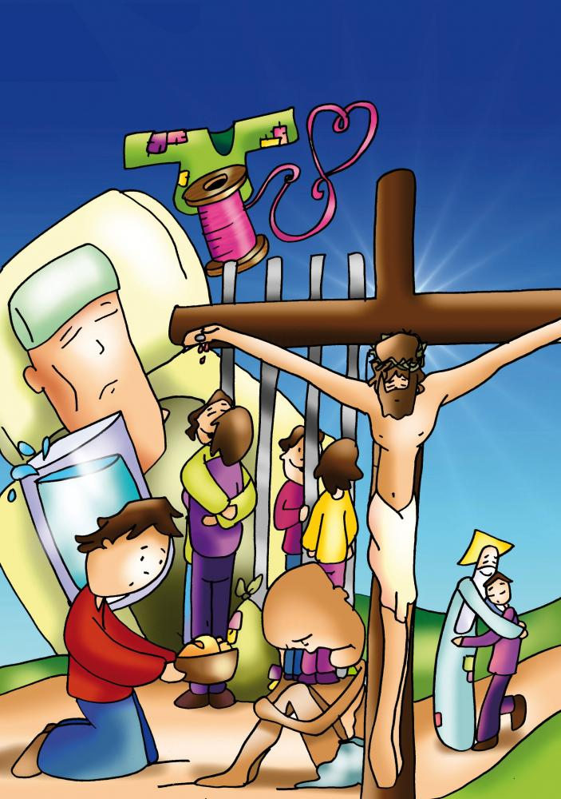
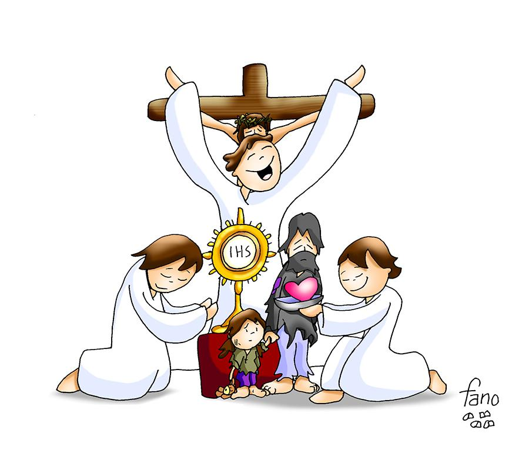
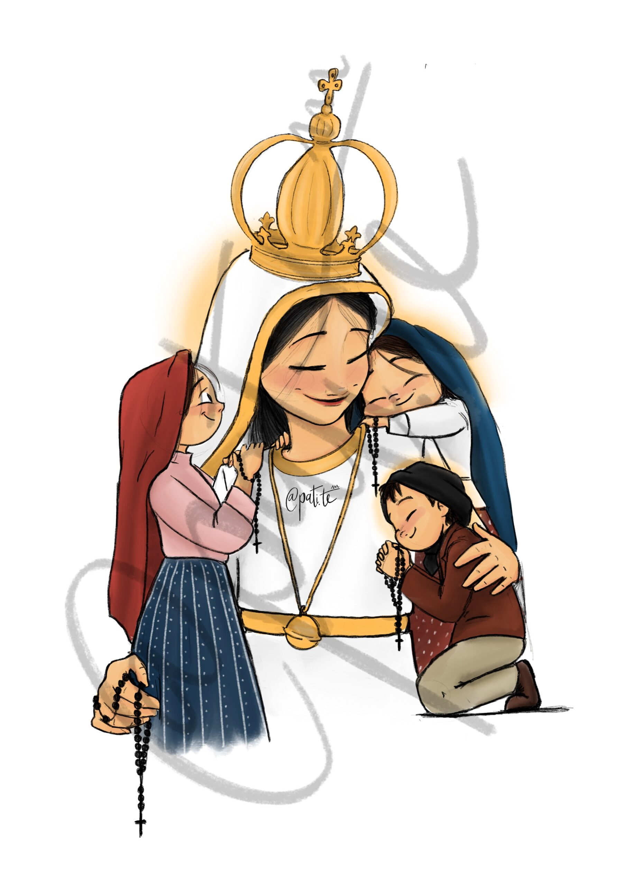

l XXVII Domingo del Tiempo Ordinario
4 de octubre de 2026


ALMA MISIONERA
Re
La
Sim
Sol
Señor, toma mi vida nueva
Re
antes de que la espera
Do
La
desgaste años en mí.
Re La
Sim
Sol
Estoy dispuesto a lo que
quieras,
Re
no importa lo que sea,
La
Re
La
Tú llámame a servir.
Re
La
LLÉVAME DONDE LOS
HOMBRES
Sim
Sol
NECESITEN TUS PALABRAS,
Re
Do
La
NECESITEN MIS GANAS DE VIVIR;
Re
La
DONDE FALTE LA ESPERANZA,
Sim
Sol
DONDE FALTE LA
ALEGRÍA
Re
La
Re
SIMPLEMENTE POR NO
SABER DE TI.
Te doy mi corazón sincero
para gritar sin miedo
tu grandeza, Señor.
Tendré mis manos sin cansancio,
tu historia entre mis manos
y fuerza en la oración
Y así, en marcha iré cantando
por calles predicando
lo bello que es tu amor.
Señor, tengo alma misionera
condúceme a la tierra
que tenga sed de Dios.

LITURGIA DE LA PALABRA
Escuchemos la Palabra de Dios

ACTO PENITENCIAL
Yo confieso ante Dios todopoderoso
y ante vosotros, hermanos,
que he pecado mucho de pensamiento, palabra, obra y omisión:
por mi culpa, por mi culpa, por mi gran culpa.
Por eso ruego a Santa María, siempre Virgen,
a los ángeles, a los santos y a vosotros, hermanos,
que intercedáis por mí ante Dios, nuestro Señor.
l XXVII Domingo del Tiempo Ordinario · 21,33-43
NUNC DIMITIS
Mim
Sol
Señor, Señor,
Re
Mim
Re
Mim
puedes dejarme ir en paz,
puedes dejarme descansar (bis)
Do
Mim
Sol
Re
Mim
Ahora, Señor, según tu
promesa puedes dejarme ir en paz
Do
Re
Mim
porque mis ojos han visto a
tu Salvador
Sol
Re
El es la luz que alumbra el
mundo entero
Re
Mim
y es la gloria de tu pueblo
(bis).
PRIMERA LECTURA
5,1-7
Voy a cantar en nombre de mi amigo un canto de amor a su viña. Mi amigo tenía una viña en fértil collado. La entrecavó, la descantó, y plantó buenas cepas; construyó en medio una atalaya y cavó un lagar. Y esperó que diese uvas, pero dio agrazones. Pues ahora, habitantes de Jerusalén, hombres de Judá, por favor, sed jueces entre mí y mi viña. ¿Qué más cabía hacer por mi viña que yo no lo haya hecho? ¿Por qué, esperando que diera uvas, dio agrazones? Pues ahora os diré a vosotros lo que voy a hacer con mi viña: quitar su valla para que sirva de pasto, derruir su tapia para que la pisoteen. La dejaré arrasada: no la podarán ni la escardarán, crecerán zarzas y cardos; prohibiré a las nubes que lluevan sobre ella. La viña del Señor de los ejércitos es la casa de Israel; son los hombres de Judá su plantel preferido. Esperó de ellos derecho, y ahí tenéis: asesinatos; esperó justicia, y ahí tenéis: lamentos.

SALMO RESPONSORIAL
Sal 79,9 — La viña del Señor es la casa de Israel
Sacaste una vid de Egipto, expulsaste a los gentiles, y la trasplantaste.
Extendió sus sarmientos hasta el mar, y sus brotes hasta el Gran Río.; ¿Por qué has derribado su cerca; para que la saqueen los viandantes, la pisoteen los jabalíes; y se la coman las alimañas?
Dios de los ejércitos, vuélvete: mira desde el cielo, fíjate, ven a visitar tu viña, la cepa que tu diestra plantó; y que tú hiciste vigorosa.
No nos alejaremos de ti: danos vida, para que invoquemos tu nombre.
Señor, Dios de los ejércitos, restáuranos, que brille tu rostro y nos salve.

SEGUNDA LECTURA
4,6-9
Nada os preocupe; sino que, en toda ocasión, en la oración y súplica con acción de gracias, vuestras peticiones sean presentadas a Dios. Y la paz de Dios, que sobrepasa todo juicio, custodiará vuestros corazones y vuestros pensamientos en Cristo Jesús. Finalmente, hermanos, todo lo que es verdadero, noble, justo, puro, amable, laudable, todo lo que es virtud o mérito, tenedlo en cuenta. Y lo que aprendisteis, recibisteis, oísteis, visteis en mí, ponedlo por obra. Y el Dios de la paz estará con vosotros.

CRISTO VIVE, ANÚNCIALO
Sol
Re
¡Cristo vive, anúncialo!,
Do
Sol
lo he oído en mi corazón
Mim
Sim
y me habla de mi Padre,
Do
Re
que me ama con locura.
¡Cristo vive, anúncialo!,
lo he oído en mi corazón,
lo he visto en mis hermanos,
que comparten amor y gozo.
Do Re
Sol
OH
HERMANO, VEN CONMIGO,
Mim
Do
Re
Sol
SI ES AMOR LO QUE MUEVE TU
VIDA.
Mim
Do
Re
Sol Sim Mim
MUESTRA
QUE CRISTO YA VIVE EN TU CORAZÓN.
Do
Re
Sol Do
¡MIRAD, ÉL VIVE HOY,
ANÚNCIALO!
¡Cristo vive, anúncialo!,
lo he oído en mi corazón
pues la muerte nada puede,
porque el Padre lo resucita.
¡Cristo vive, anúncialo!,
lo he oído en mi corazón
y me grita en mis hermanos,
los que sufren y viven solos
EVANGELIO
21,33-43
En aquel tiempo, dijo Jesús a los sumos sacerdotes y a los ancianos del pueblo: «Escuchad otra parábola: Había un propietario que plantó una viña, la rodeó con una cerca, cavó en ella un lagar, construyó la casa del guarda, la arrendó a unos labradores y se marchó de viaje. Llegado el tiempo de la vendimia, envió sus criados a los labradores, para percibir los frutos que le correspondían. Pero los labradores, agarrando a los criados, apalearon a uno, mataron a otro, y a otro lo apedrearon. Envió de nuevo otros criados, más que la primera vez, e hicieron con ellos lo mismo. Por último les mandó a su hijo, diciéndose: «Tendrán respeto a mi hijo.» Pero los labradores, al ver al hijo, se dijeron: «Éste es el heredero, venid, lo matamos y nos quedamos con su herencia.» Y, agarrándolo, lo empujaron fuera de la viña y lo mataron. Y ahora, cuando vuelva el dueño de la viña, ¿qué hará con aquellos labradores?»Le contestaron: «Hará morir de mala muerte a esos malvados y arrendará la viña a otros labradores, que le entreguen los frutos a sus tiempos.»Y Jesús les dice: «¿No habéis leído nunca en la Escritura: «La piedra que desecharon los arquitectos es ahora la piedra angular. Es el Señor quien lo ha hecho, ha sido un milagro patente?» Por eso os digo que se os quitará a vosotros el reino de Dios y se dará a un pueblo que produzca sus frutos.»; Palabra del Señor

LITURGIA EUCARÍSTICA
Preparémonos para la mesa del Señor
CREDO
Creo en Dios, Padre todopoderoso,
creador del cielo y de la tierra.
Creo en Jesucristo, su único Hijo, nuestro Señor,
que fue concebido por obra y gracia del Espíritu Santo;
nació de Santa María Virgen; padeció bajo el poder de Poncio Pilato;
fue crucificado, muerto y sepultado; descendió a los infiernos;
al tercer día resucitó de entre los muertos;
subió a los cielos y está sentado a la derecha de Dios Padre todopoderoso.
Desde allí ha de venir a juzgar a vivos y muertos.
Creo en el Espíritu Santo, la santa Iglesia católica,
la comunión de los santos, el perdón de los pecados,
la resurrección de la carne y la vida eterna. Amén.
l XXVII Domingo del Tiempo Ordinario · 21,33-43

PADRE NUESTRO SIMON Y GARFUNKEL
Lam
Sol
Padre
Nuestro, Tú que estás,
Lam
en los
que aman la verdad,
Do
Fa
Do
haz
que el Reino que por Ti se dio,
Fa
Do
llegue
pronto a nuestro corazón.
Fa
Do
Y el
Amor, que Tu Hijo nos dejó,
Lam
Sol
Lam
ese
Amor, habite en nosotros.
Y en
el pan de la unidad,
Cristo
danos Tú la paz.
Y olvídate
de nuestro mal,
Si
olvidamos el de los demás.
No
permitas que caigamos en tentación.
Oh,
Señor, y ten piedad del Mundo.
l XXVII Domingo del Tiempo Ordinario · 21,33-43

QUIERO HACER LO MISMO
Sol
Re
Mim
Es un sueño escondido del
Señor,
Do
Re
aunque ni él mismo lo
sabe.
Sol
Re
Mim
Él es un diamante, él es
lo mejor,
Do
Re
aunque nadie se lo crea.
Do
Lam
Re
Señor, haz que alguien sí
lo crea.
José sólo buscaba un
puesto mejor:
tener, poder, valer… ya
sabes.
En Roma tocaste su
corazón,
hiciste que él lo creyera,
y dio por él la vida
entera.
Sol
Re
Mim
QUIERO
HACER LO MISMO:
Sim
Do
Sol
Fa
Re
VER
EN UN NIÑO UN TESORO QUE HAY QUE CUIDAR.
Sol
Re
Mim
QUIERO
ANDAR LOS PASOS
Sim
Do
Sol
Lam
Re
Sol
DEL
SANTO VIEJO Y AMARLOS COMO LOS AMÓ CALASANZ.
Hoy aún hay millones de
niños que
viven la vida aplastados.
No dejes que la obra de
Calasanz
se cruce nunca de brazos,
que aún hay muchos niños
llorando.
QUIERO
HACER LO MISMO…
Do
Re
Sim
Yo me pondré junto a él de
rodillas
Mim
Do
y buscaré dentro de sus
ojos la luz.
Re
Sol
Sol7
Le ayudaré con letras y
piedad a vivir
Do
Re
Sim
Y él sentirá que lo estoy
amando,
Mim
Do
descubrirá que nació para
ser feliz,
Re
Sol
Re
y cambiará el mundo a
golpes de amor por ti.
QUIERO
HACER LO MISMO… (2)
Yo me pondré junto a él de
rodillas…
Re
Lam
y cambiará el mundo a
golpes de amor por ti.
Re
Lam
Con letras y piedad a
vivir.
Re
Sol
Re-Sol
Porque nació para ser feliz.
l XXVII Domingo del Tiempo Ordinario · 21,33-43
PADRE NUESTRO (Gallego)
En el mar he oído hoy
Señor tu voz que me llamó
y me pidió que me entregara
a mis hermanos.
Esa voz me transformó,
mi vida entera ya cambió,
y sólo pienso ahora Señor
en repetirte:
PADRE NUESTRO
EN TI CREEMOS,
PADRE NUESTRO
TE OFRECEMOS,
PADRE NUESTRO
NUESTRAS MANOS
DE HERMANOS.
Cuando vaya a otro lugar
tendré Señor que abandonar
a mi familia a mis amigos
por seguirte.
Pero sé que así algún día
podré enseñar tu verdad,
ir a mi hermano y junto a él
yo repetirte.
PADRE NUESTRO…
l XXVII Domingo del Tiempo Ordinario · 21,33-43

PAZ, SEÑOR (Palomas)
Do
Sol
Paz Señor en el cielo y la
tierra,
Lam
Mim
paz Señor en las olas del mar,
Fa
Do
paz Señor en las hojas que
mueve
Re7
Sol7
sin saberlo, la brisa al pasar.
Tú que haces las cosas tan
bellas,
y les das una vida fugaz,
pon, Señor, tu mirada sobre
ellas
y devuelve a los hombre la paz.
Hoy he visto Señor en el cielo
suspendidas un rayo de luz
dos palomas que alzaban el
vuelo
con sus alas en forma de cruz.
Haz que vuelvan de nuevo a la
tierra
las palomas que huyeron Señor,
y la llama que enciende la
guerra
se consuma en paz y amor.
PAZ, PAZ, PAZ SEÑOR.
PAZ, PAZ, PAZ Y AMOR.
l XXVII Domingo del Tiempo Ordinario · 21,33-43
LUCHARÉ POR TI
Sol
Re Do Re
Sol Re Do Re
Sol
Re Do Re
Cuando ves que todo va mal,
Sol
Re Do Re
cuando crees que no saldrás,
Sol Re Do
Re
siempre está ahí junto a ti,
Sol
Re Do Re Lam…
llámale, te contestará.
Lam Re
Es Jesús, es la Verdad.
Lam Re
Es amor, es libertad. (bis)
Sol Lam
LUCHARÉ POR TI,
Do Re
NO DESCANSARÉ.
Sol Lam
TE ANUNCIARÉ ALLÍ
Do Re
DONDE ES MÁS DIFÍCIL VER.
Sol Lam
NO CALLARÉ, SEÑOR,
Do Re
TÚ LO SABES BIEN,
Sol Re Do
Re Sol …
TÚ LO SABES BIEN.
Sol
Re Do Re
Sed de Dios, pura necesidad
Sol
Re Do Re
De saber quién eres Tú.
Sol
Lam Do Re
Envía tu luz que nos haga ver
Sol
Lam Do Re Lam
A Cristo Dios, nuestro Salvador
Lam Re
Es Jesús, es la Verdad.
Lam Re
Es amor, es libertad. (bis)
Sol Lam
LUCHARÉ POR TI…
l XXVII Domingo del Tiempo Ordinario · 21,33-43

CANTO A MARÍA
Dios te salve, María;
llena eres de gracia;
el Señor es contigo.
Bendita tú eres entre todas las mujeres,
y bendito es el fruto de tu vientre, Jesús.
Santa María, Madre de Dios,
ruega por nosotros, pecadores,
ahora y en la hora de nuestra muerte. Amén.
l XXVII Domingo del Tiempo Ordinario · 21,33-43

COMO CORRE UN RÍO
Como corre un río dentro de mi ser (x2)
así yo confío en Cristo, mi Rey (x2)
COMO UN RÍO DE AGUA VIVA,
QUE SALTA P’ARRIBA, QUE LLEVO DENTRO
QUE AFIRMA Y CONFIRMA EN ESTE MOMENTO
EL ESPÍRITU SANTO ESTÁ VINIENDO (X2)
Jesús está pasando por ahí
Jesús está pasando por ahí
Y cuando pasa todo lo transforma
Se va la tristeza, viene la alegría
Y cuando pasa todo lo transforma
Viene la alegría para ti y para mí
COMO UN RÍO DE AGUA VIVA… (X2)
¡ID EN PAZ!
Somos uno · 4 de octubre de 2026
La paz del Señor esté siempre con vosotros.
«¿Qué os parece? Un hombre tenía dos hijos. Se acercó al primero y le dijo: «Hijo, ve hoy a trabajar en la viña.»